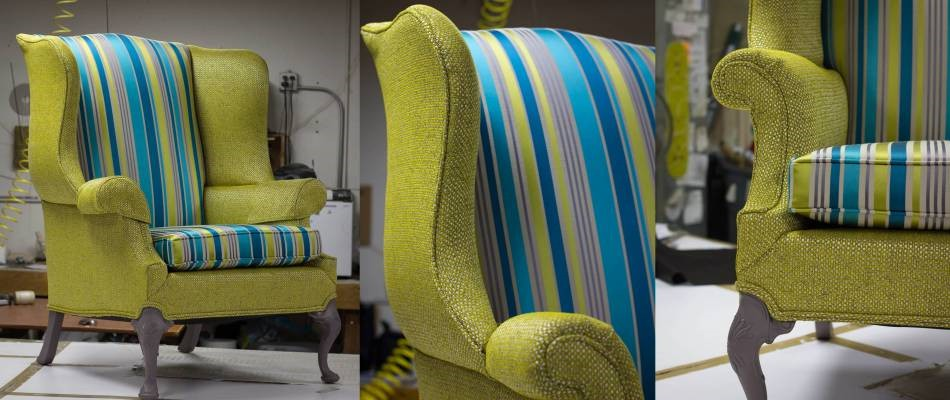
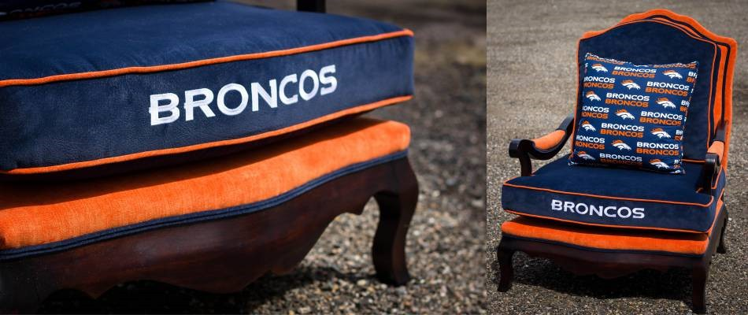
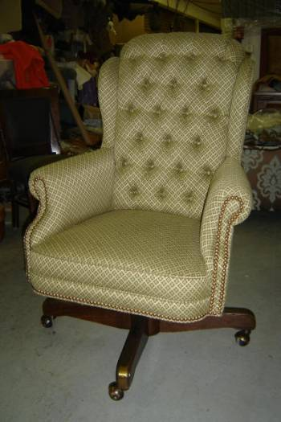
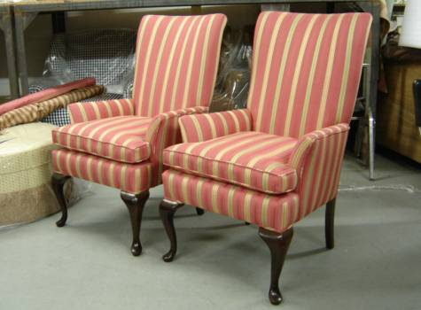
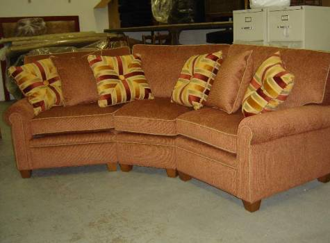

Furniture Upholstery


The cushions you lean against or sit upon are often taken for granted - until they're damaged or no longer comfortable. At Ablyss, we know that quality upholstery requires attention to detail and extensive knowledge for high-end looks. Our furniture upholstery shop provides the premier upholstery services thanks to our decades in the business.
How the Furniture Upholstery Process Works

While many people know that upholstered chairs, sofas and couches offer additional comfort through the padding they provide, few realize the workmanship that goes into the upholstery process. Upholstered items aren't simply stuffed - many include springs, padding and webbing that offers the most comfortable sitting experience while maintaining a shapely and attractive appearance.Furniture upholstery varies by each piece, but often includes:
Removal of old upholstery. The original or existing upholstered portions are removed so that the piece can be inspected for structural stability, quality and other factors that ensure your piece is not only beautiful, but safe and high-performing.
Repairs or tune-ups. In some cases, removing the old furniture upholstery allows us to spot damage within hidden areas of the piece. We take this time to make any repairs necessary; at Ablyss, this means repairing broken pieces or remanufacturing missing parts for authenticity and quality.
Replacement of linings, paddings and springs. Depending on the materials used in your furniture to provide support (and their condition), we may replace the lining, padding or springs located within. During this time, our upholstery experts can make adjustments for your personal comfort preferences.
Patternmaking and creation of new upholstery items. At Ablyss, our expert patternmakers can recreate the original shape specific to your upholstered furniture item. This is necessary when choosing new materials to ensure the piece maintains its style and looks its best.
Upholstery is a skilled process with many steps dependent upon the individual piece. Our upholsterers are knowledgeable and experienced at providing these services and other specialized repairs to your furniture.
When to Consider Furniture Upholstery
Furniture upholstery can extend the life of your furniture or reinvigorate its feel and look. Since furniture upholstery is not a commonly needed process, you may be wondering when it is necessary. We recommend considering furniture upholstery if:
The current upholstery is damaged, thinning or worn down
Padding within the furniture feels thin or non-existent
The furniture begins to lose its shape, sag or look unsightly
The furniture is no longer comfortable
The piece simply no longer looks good or fits your home's aesthetics


Our Furniture Upholstery Services
Ablyss is dedicated to providing the best services for furniture upholstery. We welcome furniture upholstery projects of all shapes, sizes and difficulties and look forward to creating high-end results that you'll be proud to use on a daily basis.
We commonly provide upholstery services for:
Sofas
Chairs
Ottomans
Headboards
Antique Settees
Custom projects and pieces
Considering Our Furniture Upholstery Services?
Ablyss offers the highest quality furniture upholstery. We're proud of our eye for detail, decades of experience and understanding of the upholstery process. If you are considering a furniture upholstery project, contact us on 303.935.0949 to learn more. Our skilled upholsterers can determine your furniture upholstery needs and provide quality results that last for years to come.